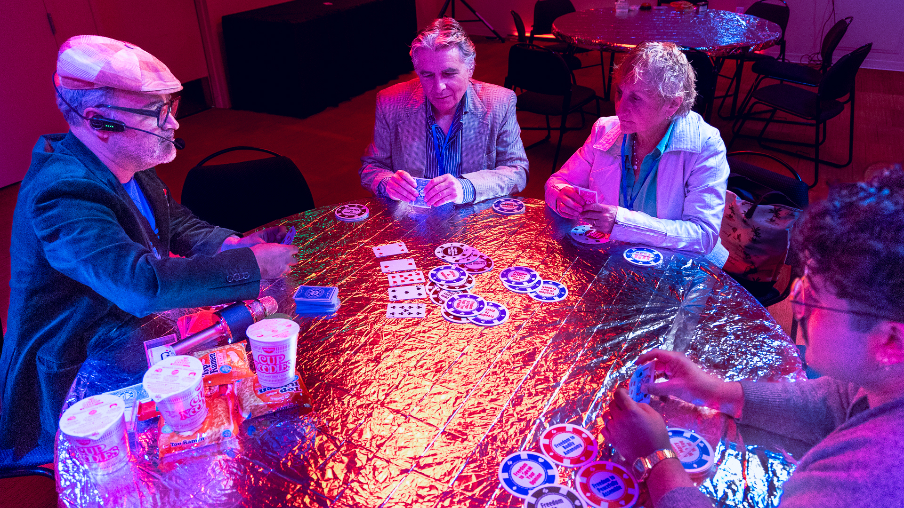
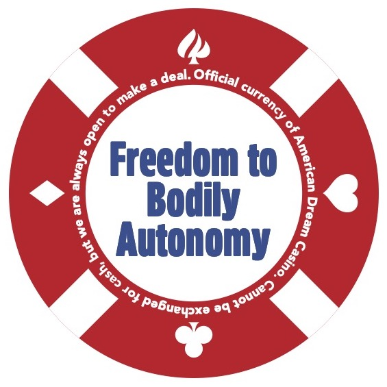

Art Direction (of all Graphic Design, Sound Design, and Lighting Design), Set Design, LED Neon Installation Design, Direction, Writing, Experience Design by Robert Farid Karimi




Video link is a section of the American Dream Casino development at DNA New Work Series, December 2024 at La Jolla Playhouse. It features casino gameplay, an initial prototype of the American Dream Casino slot machine, and the neon installment.
American Dream Casino is a playful, interactive, casino-like experience that celebrates what we gamble, and what we gain (and lose) to achieve the American Dream.
Gamblers play with a special casino currency to win prizes, with the ultimate reward being an all-expenses-paid American Dream for themselves and their loved ones. The experience places audiences, aka The High Rollers, in a world which features tables with games of chance and the American Dream Slot Machine.
All featured photos from the April 2025 production at La Jolla Playhouse's WOW Festival - one of the largest interactive performance festivals in the US. Shown is gameplay between audience members and Karaoke signing casino dealer Bobby Karr (played by Robert Farid Karimi). All tables covered with mylar blankets as the ones given to deported migrants; players who lose are given Ramen or cup of noodles as the casino covers a truth: it is the new US deportation center where players are gambling to stay in the country. If they lose, they will be deported to El Salvador. The only way to get out is to rebel against the casino,
As part of the Experience Design, Karimi directed all aspects of the artistic design of American Dream Casino. They designed the sound and environment to emulate the emotional experience of an actual casino, designed neon installation for the casino to serve as a beacon for the outside of the casino and give the Vegas aesthetic to the inside (as well as foreshadow some of the satirical aspects of the experience) and worked with graphic and lighting designers to complete the environment. Sample images of 3 of the 30 chips used as currency during the experience and what participants bet in the American Dream Casino. Chips' text is derived from the 30 UN Universal Declaration of Human Rights.
← Back to Samples